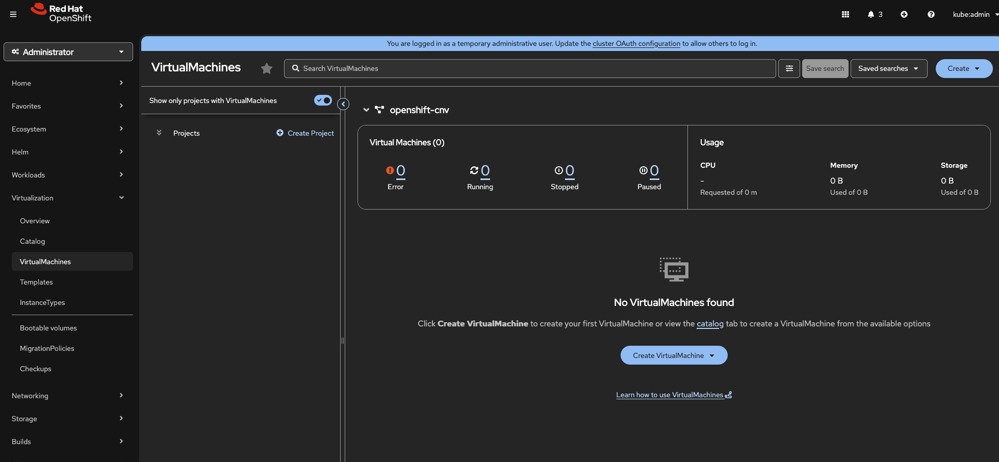
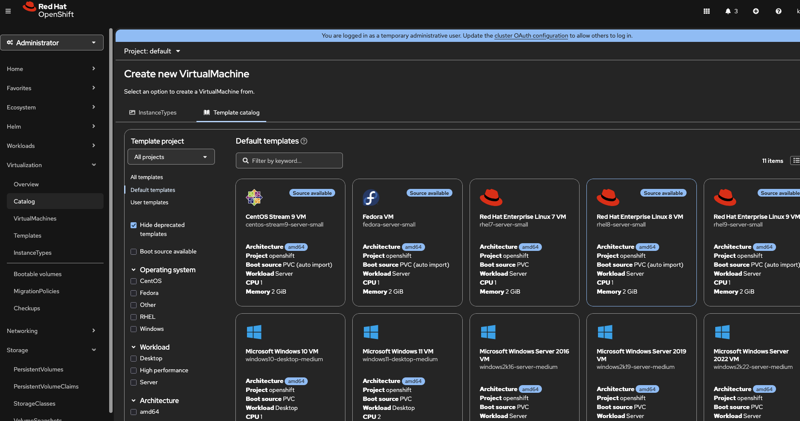
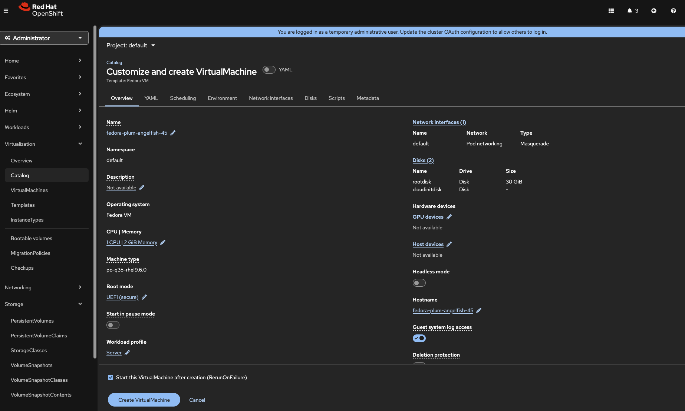

ウェブコンソールとテンプレートを使用したVMの作成
概要
このチュートリアルでは、OpenShiftウェブコンソールと事前構築済みテンプレートを使用して仮想マシンを作成する方法を説明します。ウェブコンソールはVM管理のための直感的なグラフィカルインターフェースを提供し、新規ユーザーにとって理想的な出発点となります。
前提条件
-
OpenShift VirtualizationオペレーターがインストールされたOpenShift 4.18+ (参照: OpenShift Virtualizationのインストール)
-
VMを作成する権限を持つOpenShiftウェブコンソールへのアクセス
-
VMディスクプロビジョニング用に構成されたデフォルトのStorageClass
-
クラスター内で利用可能なブートソースイメージ (DataSource)
ブートソースが利用可能であることを確認します。
oc get datasources -n openshift-virtualization-os-imagesステップ 1: 仮想化セクションへのアクセス
-
OpenShiftウェブコンソールにログインします
-
左側のナビゲーションメニューで、Virtualization をクリックします
-
VirtualMachines をクリックして、VM管理インターフェースを表示します

VirtualMachinesページには、選択したプロジェクト内のすべてのVMが、そのステータスと基本情報とともに表示されます。
ステップ 2: 利用可能なテンプレートの参照
OpenShift Virtualizationには、一般的なオペレーティングシステム用の事前設定済みテンプレートが含まれています。
-
VirtualMachinesページから、Create → From template をクリックします
-
オペレーティングシステム別に整理された利用可能なテンプレートを参照します。
-
Red Hat Enterprise Linux - さまざまなRHELバージョン
-
Fedora - 最新のFedoraリリース
-
CentOS Stream - CentOS Streamバージョン
-
Microsoft Windows - Windows Serverおよびデスクトップバージョン
-

| Source available と表示されているテンプレートには、すぐに使用できる事前設定済みのブートソースがあります。これには、クラスターでdefault StorageClass が構成されている必要があります。 |
各テンプレートには以下が含まれます。
-
事前設定されたCPUおよびメモリー設定
-
OSに適したディスクサイズ
-
ブートソース参照 (DataSource)
-
Cloud-initまたはsysprep構成 (該当する場合)
ステップ 3: テンプレートからのVM作成
この例ではFedora VMを作成します。他のオペレーティングシステムでも同様のプロセスです。

VM詳細の構成
Customize VirtualMachine ページで、Overview タブのVM設定を構成します。
-
名前: VMの名前を入力します (例:
fedora-test-vm) -
プロジェクト: VMが作成されるプロジェクト (ネームスペース) を選択します
-
ブートソース: デフォルトでFedora DataSourceが表示されるはずです
-
CPU: CPUコア数を調整します (デフォルトは通常1です)
-
メモリー: RAM割り当てを調整します (デフォルトはテンプレートによって異なります)



ステップ 4: VM作成の監視
Createをクリックすると、VM詳細ページにリダイレクトされます。
プロビジョニングの進行状況を追跡する
VMは作成中にいくつかのフェーズを経ます。
-
Provisioning - ディスクがブートソースからクローンされています
-
Starting - VMが起動しています (起動が選択されていた場合)
-
Running - VMが完全に動作しています

Events タブを監視して、詳細なプロビジョニングステップを確認します。
# Alternatively, watch events from CLI
oc get events -n <your-namespace> --field-selector involvedObject.name=<vm-name> -w
ステップ 5: VMコンソールへのアクセス
ウェブコンソールは、VMのグラフィカルコンソールへの直接アクセスを提供します。

コンソールオプション
コンソールツールバーには以下のオプションがあります。
-
Send key - 特殊なキーの組み合わせを送信します (Ctrl+Alt+Delなど)
-
Disconnect - コンソール接続を閉じます
-
Guest credentials - テンプレートが提供する場合のユーザー名とパスワード
| パフォーマンスを向上させるには、通常の作業ではウェブコンソールの代わりにLinux VMへのSSHアクセスまたはWindows VMへのRDPを使用することを検討してください。 |
ステップ 6: 基本的なVM操作
ステップ 7: VMの詳細とメトリクスの表示


クイック作成を使用したVMの作成
デフォルト設定でVMをより速く作成するには、クイック作成オプションを使用します。
-
VirtualMachinesページから、Create → From template をクリックします
-
テンプレートを選択します
-
Customize VirtualMachine の代わりに、Quick create VirtualMachine をクリックします
-
VMはデフォルト設定ですぐに作成されます

これは以下の場合に役立ちます。
-
テストおよび開発環境
-
デフォルトのテンプレート設定で許容できる場合
-
迅速なプロトタイピング
まとめ
あなたは次の方法を学びました。
-
ウェブコンソールの仮想化セクションに移動する
-
VMテンプレートを参照および選択する
-
カスタマイズされた設定でVMを作成する
-
VMプロビジョニングの進行状況を監視する
-
ウェブブラウザを介してVMコンソールにアクセスする
-
基本的なVM操作 (停止、起動、再起動、削除) を実行する
-
VMの詳細とメトリクスを表示する
次のステップ
-
virtctl CLIを学ぶ - コマンドラインVM管理
-
静的IPを構成する - VMの静的IP構成
-
SSHアクセスを設定する - SSH経由でLinux VMに接続する